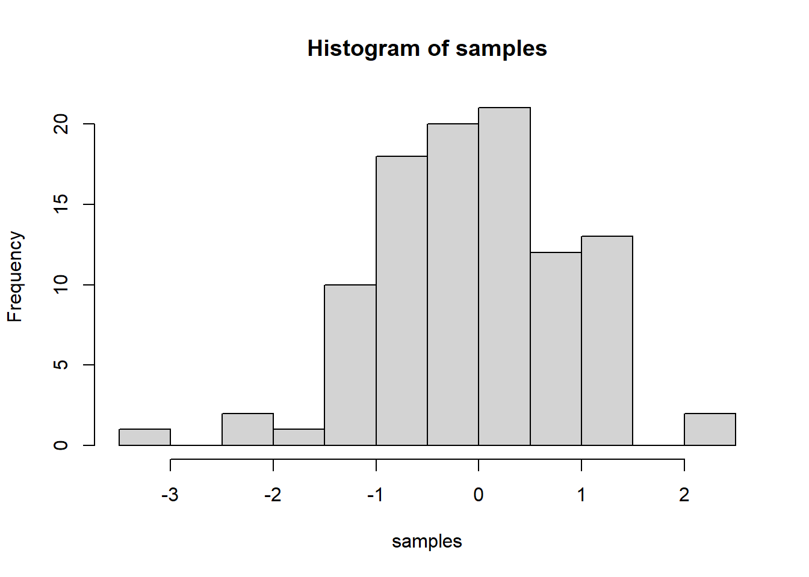
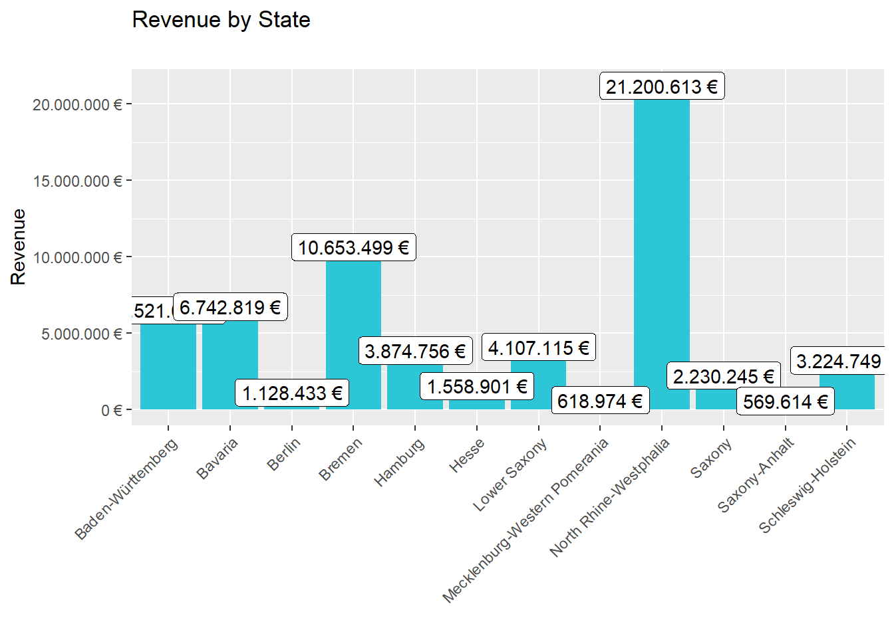
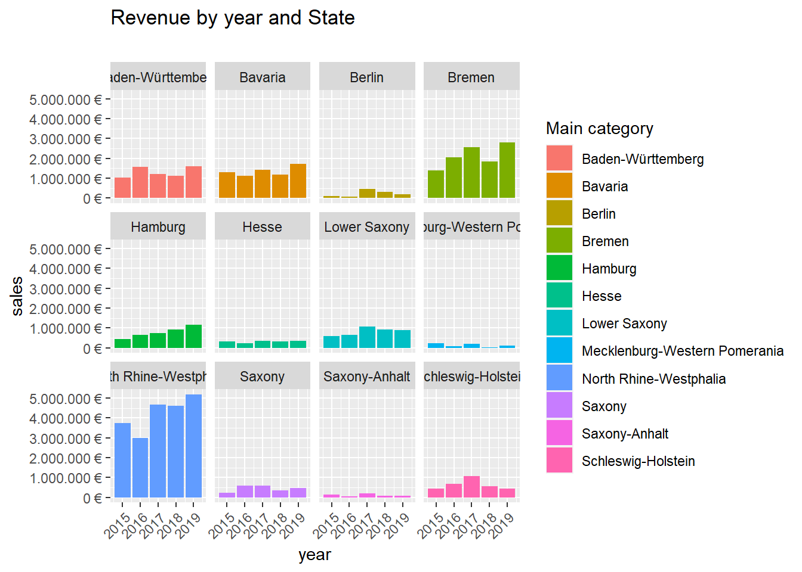
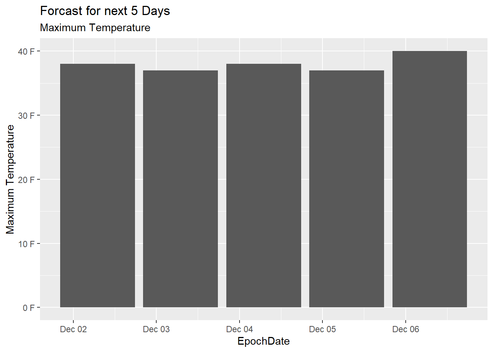
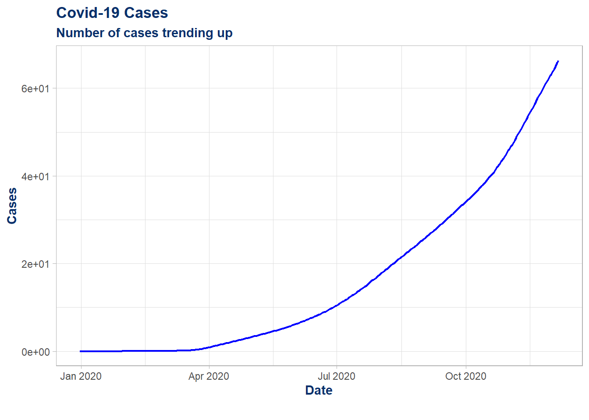
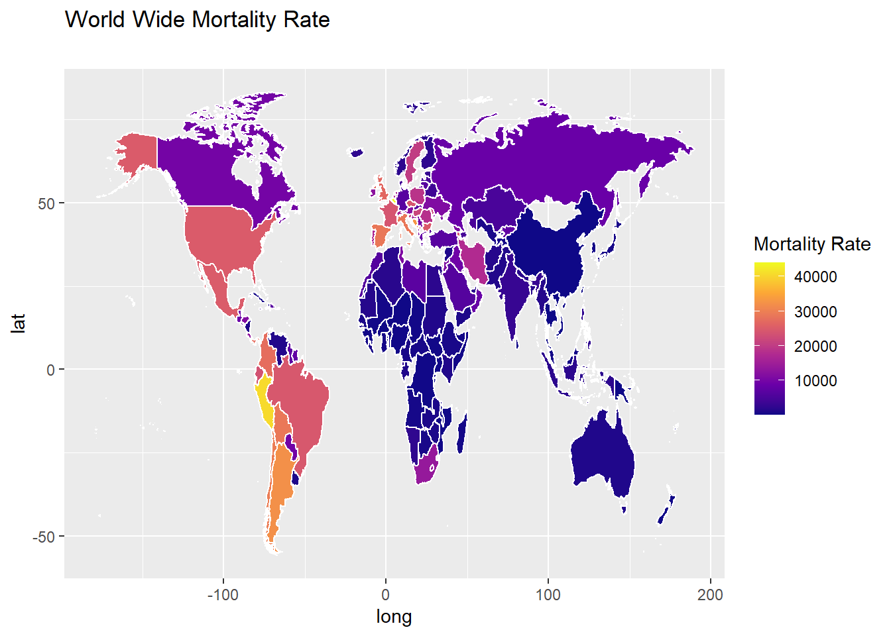

Last compiled: 2020-12-06 Challange for chapter 2 is done
samples <- rnorm(100, mean=0, sd=1)
hist(samples) ## web scraping In general, web scraping in R (or in any other language) boils down to the following three steps:
Preparing the data …
# 1.0 Load libraries ----
library(tidyverse)
library(readxl)
library(lubridate)
# 2.0 Importing Files ----
bikes_tbl <- read_excel(path = "DS_101/00_data/01_bike_sales/01_raw_data/bikes.xlsx")
orderlines_tbl <- read_excel("DS_101/00_data/01_bike_sales/01_raw_data/orderlines.xlsx")
bikeshops_tbl <- read_excel("DS_101/00_data/01_bike_sales/01_raw_data/bikeshops.xlsx")
# 4.0 Joining Data ----
bike_orderlines_joined_tbl <- orderlines_tbl %>%
left_join(bikes_tbl, by = c("product.id" = "bike.id")) %>%
left_join(bikeshops_tbl, by = c("customer.id" = "bikeshop.id"))
# 5.0 Wrangling Data ----
bike_orderlines_wrangled_tbl <- bike_orderlines_joined_tbl %>%
# 5.1 Separate category name
separate(col = category,
into = c("category.1", "category.2", "category.3"),
sep = " - ") %>%
# 5.2 Add the total price (price * quantity)
# Add a column to a tibble that uses a formula-style calculation of other columns
mutate(total.price = price * quantity) %>%
# 5.3 Optional: Reorganize. Using select to grab or remove unnecessary columns
# 5.3.1 by exact column name
select(-...1, -gender) %>%
# 5.3.2 by a pattern
# You can use the select_helpers to define patterns.
# Type ?ends_with and click on Select helpers in the documentation
select(-ends_with(".id")) %>%
# 5.3.3 Actually we need the column "order.id". Let's bind it back to the data
bind_cols(bike_orderlines_joined_tbl %>% select(order.id)) %>%
# 5.3.4 You can reorder the data by selecting the columns in your desired order.
# You can use select_helpers like contains() or everything()
select(order.id, contains("order"), contains("model"), contains("category"),
price, quantity, total.price,
everything()) %>%
# 5.4 Rename columns because we actually wanted underscores instead of the dots
# (one at the time vs. multiple at once)
rename(bikeshop = name) %>%
set_names(names(.) %>% str_replace_all("\\.", "_"))bike_orderlines_wrangled_state_tbl <- bike_orderlines_wrangled_tbl %>%
# 5.1 Separate category name
separate(col = location,
into = c("city", "state"),
sep = ", ")
# Analyze
sales_by_loc_tbl <- bike_orderlines_wrangled_state_tbl %>%
# Select columns
select(state, total_price) %>%
# Grouping by year and summarizing sales
group_by(state) %>%
summarize(sales = sum(total_price)) %>%
# Add a column that turns the numbers into a currency format
mutate(sales_loc = scales::dollar(sales, big.mark = ".",
decimal.mark = ",",
prefix = "",
suffix = " €"))
sales_by_loc_tbl %>%
# Setup canvas with the columns year (x-axis) and sales (y-axis)
ggplot(aes(x = state, y = sales)) +
# Geometries
geom_col(fill = "#2DC6D6") + # Use geom_col for a bar plot
geom_label(aes(label = sales_loc)) + # Adding labels to the bars
geom_smooth(method = "lm", se = FALSE) + # Adding a trendline
# Formatting
scale_y_continuous(labels = scales::dollar_format(big.mark = ".",
decimal.mark = ",",
prefix = "",
suffix = " €")) +
theme(axis.text.x = element_text(angle = 45, hjust = 1)) +
labs(
title = "Revenue by State",
subtitle = "",
x = "", # Override defaults for x and y
y = "Revenue"
)
sales_by_year_loc_tbl <- bike_orderlines_wrangled_state_tbl %>%
# Select columns and add a year
select(order_date, total_price, state) %>%
mutate(year = year(order_date)) %>%
# Group by and summarize year and states
group_by(year, state) %>%
summarise(sales = sum(total_price)) %>%
ungroup() %>%
# Format $ Text
mutate(sales_text = scales::dollar(sales, big.mark = ".",
decimal.mark = ",",
prefix = "",
suffix = " €"))
# Step 2 - Visualize
sales_by_year_loc_tbl %>%
# Set up x, y, fill
ggplot(aes(x = year, y = sales, fill = state)) +
# Geometries
geom_col() + # Run up to here to get a stacked bar plot
# Facet
facet_wrap(~ state) +
# Formatting
scale_y_continuous(labels = scales::dollar_format(big.mark = ".",
decimal.mark = ",",
prefix = "",
suffix = " €")) +
theme(axis.text.x = element_text(angle = 45, hjust = 1)) +
labs(
title = "Revenue by year and State",
subtitle = "",
fill = "Main category" # Changes the legend name
)
# Libraries
library(httr)
library(jsonlite)
library(dplyr)
library(keyring)
library("data.table")
library(tidyverse) # Main Package - Loads dplyr, purrr, etc.
library(rvest) # HTML Hacking & Web Scraping
library(xopen) # Quickly opening URLs
library(jsonlite) # converts JSON files to R objects
library(glue) # concatenate strings
library(stringi) # character string/text processing
library(lubridate)
library(anytime)
# Securing My API
#keyring::key_set("MYAPI")
# get data from API
my_url <- paste0("http://dataservice.accuweather.com/forecasts/",
"v1/daily/5day/178556?apikey=",
key_get("MYAPI"))
my_raw_result <- httr::GET(my_url)
my_content <- httr::content(my_raw_result, as = 'text') %>%
fromJSON()
forcast <- my_content$DailyForecasts
Weather <- forcast %>% select(EpochDate,Temperature)
Temperature<- Weather %>% select(Temperature)%>% as.data.table()
date <- Weather %>% select(EpochDate) %>% as_tibble()
date <- map(date, anytime)
date<- date %>% as_tibble()
Max_Temp <- Temperature %>% select(Temperature.Maximum.Value)
Min_Temp <- Temperature %>% select(Temperature.Minimum.Value)
names(Max_Temp)[1]<-paste("Maximum Temperature")
names(Min_Temp)[1]<-paste("Minimum Temperature")
Final_Forcast <- cbind(date,Max_Temp,Min_Temp)
Final_Forcast %>% as_tibble()## # A tibble: 5 x 3
## EpochDate `Maximum Temperature` `Minimum Temperature`
## <dttm> <dbl> <dbl>
## 1 2020-12-02 07:00:00 38 30
## 2 2020-12-03 07:00:00 37 31
## 3 2020-12-04 07:00:00 38 31
## 4 2020-12-05 07:00:00 37 33
## 5 2020-12-06 07:00:00 40 37Final_Forcast %>%
ggplot(aes(x = EpochDate, y = `Maximum Temperature`)) +
# Geometries
geom_col() + # Run up to here to get a stacked bar plot
# Formatting
scale_y_continuous(labels = scales::dollar_format(big.mark = ".",
decimal.mark = ",",
prefix = "",
suffix = " F")) +
labs(
title = "Forcast for next 5 Days",
subtitle = "Maximum Temperature",
fill = "Main category" # Changes the legend name
)
url_home <- "https://www.rosebikes.de/fahrr%C3%A4der"
# Read in the HTML for the entire webpage
html_home <- read_html(url_home)
bike_family_tbl <- html_home %>%
html_nodes(css = ".catalog-categories-item__link") %>%
html_text()
# ...and extract the information of the id attribute
# html_attr('title')
price <- html_home %>%
html_nodes(css = ".catalog-categories-item__link") %>%
html_text() %>%
stringr::str_replace_all("[[/.]]", replacement = "") %>%
stringr::str_extract(pattern = "[0-9 | /,]+") %>%
as_tibble()
# ...and extract the information of the id attribute
# html_attr('title')
model <- html_home %>%
html_nodes(css = ".catalog-categories-item__link") %>%
html_text() %>%
stringr::str_extract("[a-z | A-Z | /-]+") %>%
as_tibble()
#as.numeric()
# ...and extract the information of the id attribute
# html_attr('title')
names(model)[1]<-paste("Model")
names(price)[1]<-paste("Starting Price")
Data_Final <- cbind(model,price)
saveRDS(Data_Final, "Final_Data.rds")
Data_Final## Model Starting Price
## 1 MTB 799
## 2 Rennrad 1199
## 3 Gravel 1549
## 4 E-Bike 2899
## 5 Cyclocross 1849,00
## 6 Trekking 1149
## 7 Fitness 1099
## 8 Reise 2399
## 9 Urban 2099
## 10 Kinder
## 11 Sale 1199,00
## 12 Bike-FinderPrepare the data and processing …
# 1.0 Load libraries ----
library(vroom)
library(tidyverse)
library(data.table)
library(readr)
# 2.0 DATA IMPORT & Data Table Conversion ----
# 2.1 Assignee Data ----
col_types_assignee <- list(
id = col_character(),
type = col_integer(),
name_first = col_skip(),
name_last = col_skip(),
organization = col_character()
)
assignee_tbl <- vroom(
file = "DS_101/02_data_wrangling/assignee.tsv",
delim = "\t",
col_types = col_types_assignee,
na = c("", "NA", "NULL")
)
setDT(assignee_tbl)
# 2.2 Patent Assignee Data ----
col_types_patent_assignee <- list(
patent_id = col_character(),
assignee_id = col_character(),
location_id = col_skip()
)
patent_assignee_tbl <- vroom(
file = "DS_101/02_data_wrangling/patent_assignee.tsv",
delim = "\t",
col_types = col_types_patent_assignee,
na = c("", "NA", "NULL")
)
setDT(patent_assignee_tbl)
# 2.3 Patent Data ----
col_types_patent <- list(
id = col_character(),
type = col_character(),
number = col_skip(),
country = col_skip(),
date = col_date("%Y-%m-%d"),
abstract = col_skip(),
title = col_skip(),
kind = col_skip(),
num_claims = col_double(),
filename = col_skip(),
withdrawn = col_skip()
)
patent_tbl <- vroom(
file = "DS_101/02_data_wrangling/patent.tsv",
delim = "\t",
col_types = col_types_patent,
na = c("", "NA", "NULL")
)
setDT(patent_tbl)
# 2.4 USPC Data ----
col_types_uspc <- list(
uuid = col_skip(),
patent_id = col_character(),
mainclass_id = col_character(),
subclass_id = col_skip(),
sequence = col_skip()
)
uspc_tbl <- vroom(
file = "DS_101/02_data_wrangling/uspc.tsv",
delim = "\t",
col_types = col_types_uspc,
na = c("", "NA", "NULL")
)
setDT(uspc_tbl)
# 3.0 DATA WRANGLING ----
# 3.1 Renaming columns ----
setnames(assignee_tbl, "id", "assignee_id")
setnames(assignee_tbl, "type", "assignee_type")
setnames(patent_tbl, "id", "patent_id")
setnames(patent_tbl, "type", "patent_type")
# 3.2 Joining / Merging Data ----
ch1_combined_data <- merge(x = assignee_tbl, y = patent_assignee_tbl,
by = "assignee_id",
all.x = TRUE,
all.y = FALSE)
ch2_combined_data <- merge(x = ch1_combined_data, y = patent_tbl,
by = "patent_id",
all.x = TRUE,
all.y = FALSE)
ch3_combined_data <- merge(x = ch1_combined_data, y = uspc_tbl,
by = "patent_id",
all.x = TRUE,
all.y = FALSE)
# Challenge 4 task 1 ----
ch1_keep_cols <- c("organization","assignee_type","patent_id")
ch1_combined_data <- ch1_combined_data[, ..ch1_keep_cols]
us_top10 <- ch1_combined_data[ assignee_type==2 & !is.na(patent_id) & !is.na(organization) , .N , by = organization][order(N, decreasing = TRUE)] %>% head(10)
write_rds(us_top10, "DS_101/02_data_wrangling/us_top10.rds")A List of the 10 US companies with the most assigned/granted patents
us_top10 <- readRDS("DS_101/02_data_wrangling/us_top10.rds")
us_top10## organization N
## 1: International Business Machines Corporation 139091
## 2: General Electric Company 47121
## 3: Intel Corporation 42156
## 4: Hewlett-Packard Development Company, L.P. 35572
## 5: Microsoft Corporation 30085
## 6: Micron Technology, Inc. 28000
## 7: QUALCOMM Incorporated 24702
## 8: Texas Instruments Incorporated 24181
## 9: Xerox Corporation 23173
## 10: Apple Inc. 21820# Challenge 4 task 2 ----
ch2_keep_cols <- c("date","organization","assignee_type","patent_id")
ch2_combined_data <- ch2_combined_data[, ..ch2_keep_cols]
us_top10_2019 <- ch2_combined_data[ assignee_type==2 & lubridate::year(date) == "2019" & !is.na(patent_id) & !is.na(organization) , .N , by = organization][order(N, decreasing = TRUE)] %>% head(10)
write_rds(us_top10_2019, "DS_101/02_data_wrangling/us_top10_2019.rds")A List of the top 10 companies with the most new granted patents for 2019
us_top10_2019 <- readRDS("DS_101/02_data_wrangling/us_top10_2019.rds")
us_top10_2019## organization N
## 1: International Business Machines Corporation 9265
## 2: Intel Corporation 3526
## 3: Microsoft Technology Licensing, LLC 3106
## 4: Apple Inc. 2817
## 5: Ford Global Technologies, LLC 2624
## 6: Amazon Technologies, Inc. 2533
## 7: QUALCOMM Incorporated 2359
## 8: Google Inc. 2290
## 9: General Electric Company 1860
## 10: Hewlett-Packard Development Company, L.P. 1589# Challenge 4 task 3 ----
ch3_keep_cols <- c("organization","assignee_type","patent_id","mainclass_id")
ch3_combined_data <- ch3_combined_data[, ..ch3_keep_cols]
ww_top10 <- ch1_combined_data[ assignee_type==2 || assignee_type==3 & !is.na(patent_id) & !is.na(organization) , .N , by = organization][order(N, decreasing = TRUE)] %>% head(10)
main_class_top5 <- ch3_combined_data[ organization %in% as.vector(unlist(ww_top10$organization)) & !is.na(patent_id) & !is.na(mainclass_id), .N , by = mainclass_id][order(N, decreasing = TRUE)] %>% head(5)
write_rds(main_class_top5, "DS_101/02_data_wrangling/main_class_top5.rds")The top 5 USPTO tech main classes
main_class_top5 <- readRDS("DS_101/02_data_wrangling/main_class_top5.rds")
main_class_top5## mainclass_id N
## 1: 257 89912
## 2: 438 51648
## 3: 365 39023
## 4: 370 34820
## 5: 358 33274# Libraries -----------------------------
library(tidyverse)
library(lubridate)
# Data Processing -----------------------------------------
covid_data_tbl <- read_csv("https://opendata.ecdc.europa.eu/covid19/casedistribution/csv")
covid_data_dated_tbl <- covid_data_tbl %>% mutate(date = make_date(year, month, day))
Total_casses <- covid_data_dated_tbl %>% group_by(date)%>% summarise(Total = sum(cases))
Total_casses <- Total_casses %>% arrange(!desc(date))
cumsum <- Total_casses %>% mutate(cumsum = cumsum(Total))
# Visualization ------------------------------------------
cumsum %>%
ggplot(aes(date, cumsum)) +
theme_light() +
theme(
title = element_text(face = "bold", color = "#08306B")
) +
scale_x_date(limits = as.Date(c("2019-12-31","2020-12-06"))) +
ggtitle("limits = as.Date(c(\"2019-12-31\",\"2020-12-06\"))")+
scale_y_continuous(labels = scales::scientific_format(scale = 1e-6,
preix = "*",
suffix = "")) +
labs(
title = "Covid-19 Cases",
subtitle = "Number of cases trending up",
caption = "",
x = "Date",
y = "Cases",
color = "cumsum" # Legend text
)+
geom_line(size = 0.8, linetype = 1 , color = "blue")
#-----------------------------------------------------------------------------------
# Import Data & Processing
world_map <- map_data("world")
mor_rate_by_country <- covid_data_dated_tbl %>% group_by(countriesAndTerritories)%>% summarise(Mor_rate = sum(deaths)/sum(popData2019))
mor_rate_by_country <- mor_rate_by_country %>% mutate(across(countriesAndTerritories, str_replace_all, "_", " ")) %>%
mutate(countriesAndTerritories = case_when(
countriesAndTerritories == "United Kingdom" ~ "UK",
countriesAndTerritories == "United States of America" ~ "USA",
countriesAndTerritories == "Czechia" ~ "Czech Republic",
TRUE ~ countriesAndTerritories
))
Corona_Data <- world_map %>% left_join(mor_rate_by_country, by = c("region" = "countriesAndTerritories"))
Corona_Data <- Corona_Data %>% mutate(More_rate_factored = Mor_rate*10000000000) %>% filter(Mor_rate > 0)
# Visualization ---------------------------------------------------
ggplot(Corona_Data, aes(x = long, y = lat, group = group)) +
geom_polygon(aes(fill=More_rate_factored), colour = "white") +
expand_limits(x = Corona_Data$long, y = Corona_Data$lat)+
scale_fill_viridis_c(option = "C")+
labs(
title = "World Wide Mortality Rate",
subtitle = "",
fill = "Mortality Rate" # Changes the legend name
)